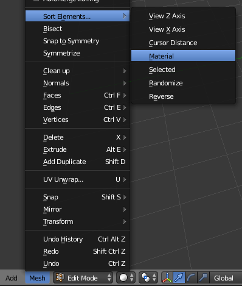

Modanung
Archive 19/01/2023.
Geometry index inconsistency


codingmonkey
did you try this sorting ?

Modanung
I was not aware of this option, I’ll try that. Seems like sorting by material is what I would need. Awesome.
Thanks again!
EDIT: Yep, that’s it! Cool; what a relief.

heXon pilots are now saved to and loaded from a file.
EDIT2: This python script does the same for all selected objects:
import bpy
for ob in bpy.context.selected_objects:
bpy.context.scene.objects.active = ob
bpy.ops.object.mode_set(mode = 'EDIT')
bpy.ops.mesh.select_all(action='SELECT')
bpy.ops.mesh.sort_elements(type='MATERIAL', elements={'FACE'})
bpy.ops.object.mode_set(mode = 'OBJECT')